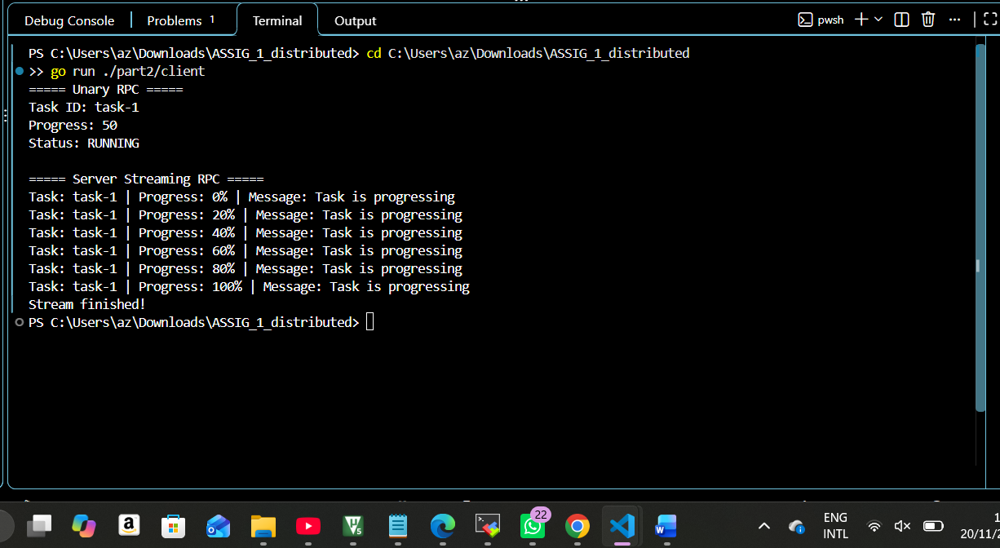
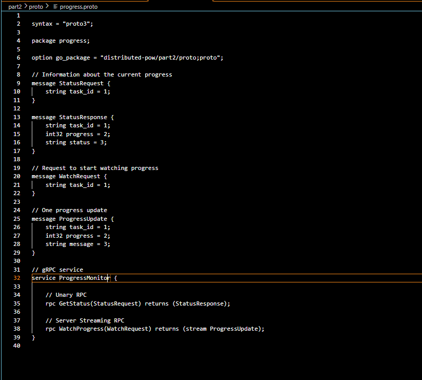
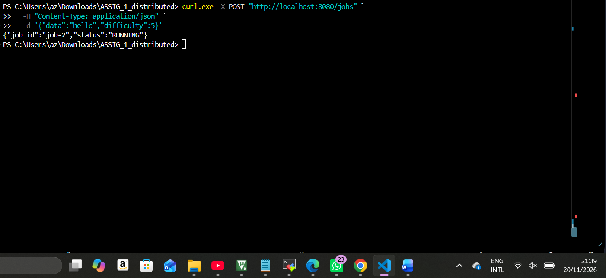
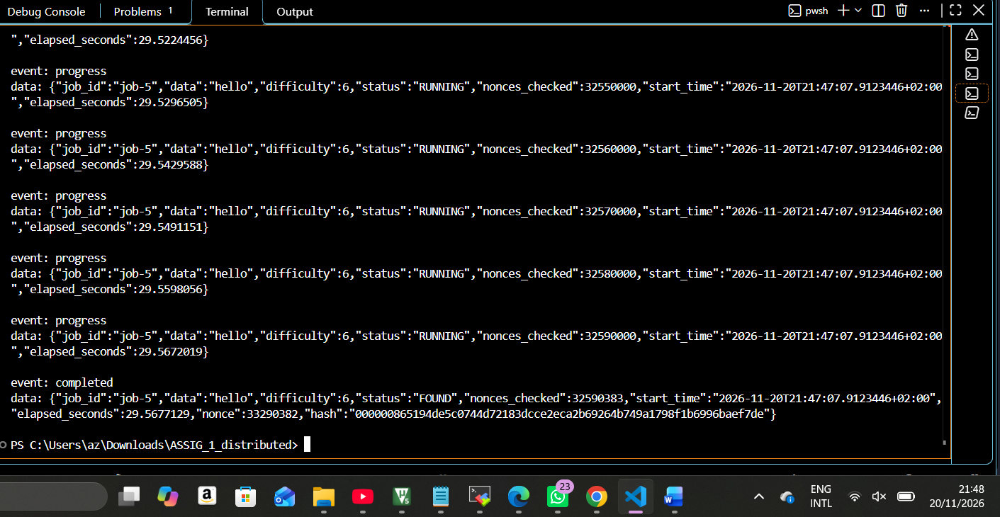
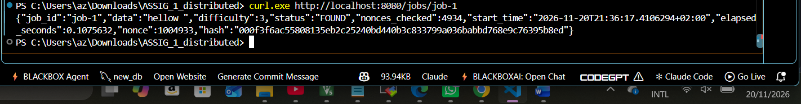
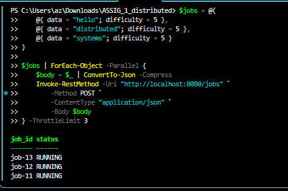
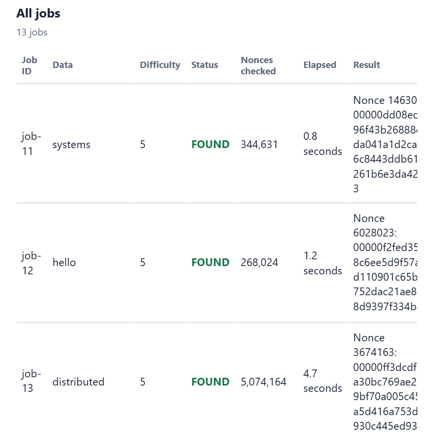
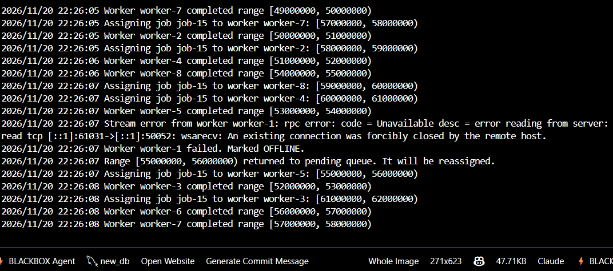

Distributed Systems
Assignment Report
gRPC Progress Monitoring and Distributed Proof of Work
Student Name: Aysha Hasan
Student ID: 1220352
Table of Contents
| 1. Assignment Overview | 3 |
| 2. gRPC Progress Monitoring | 4 |
| 3. Protocol and Streaming Details | 5 |
| 4. Distributed Proof-of-Work Architecture | 6 |
| 5. Testing and Results | 8 |
| 6. Fault Tolerance and Scalability | 10 |
| 7. Conclusion | 12 |
Executive Summary
This project implements two distributed-systems components using Go. The first demonstrates unary and server-streaming RPC communication with gRPC. The second implements a coordinator-worker Proof-of-Work system that accepts REST jobs, divides nonce ranges among workers, streams progress, supports cancellation, and handles worker failures.
Assignment Overview
1. Objectives
- Define gRPC service contracts using Protocol Buffers.
- Implement unary and server-streaming RPCs.
- Build a distributed task coordinator and multiple workers.
- Parallelize SHA-256 nonce search with worker ranges.
- Provide REST APIs, SSE updates, and a browser dashboard.
- Demonstrate cancellation, invalid requests, and worker fault tolerance.
2. Project Structure
| Path | Responsibility |
|---|---|
| part2/ | gRPC progress server and client. |
| part3/coordinator/ | REST API, worker registry, scheduler, SSE, and dashboard. |
| part3/worker/ | gRPC worker server and SHA-256 search. |
| part3/proto/ | Coordinator and worker service contracts. |
3. Architecture
| HTTP / SSE
Coordinator (REST + gRPC + Scheduler)
| gRPC registration / heartbeats / search
Worker 1 ... Worker N -> SHA-256 nonce search
gRPC Progress Monitoring
1. Service Contract
The ProgressMonitor service provides two RPC patterns:
- Unary RPC: GetStatus receives a task ID and returns progress and status.
- Server streaming: WatchProgress streams updates from 0% to 100%.
2. Unary RPC Result
The client requests status for task-1. The server returns progress 50 and status RUNNING.

3. Server Evidence

Protocol and Streaming Details
The progress.proto file defines request and response messages plus unary and server-streaming methods. Generated Go code is stored in the proto directory.

Observed Behavior
| RPC Pattern | Input | Output | Result |
|---|---|---|---|
| Unary | StatusRequest(task-1) | StatusResponse | 50%, RUNNING |
| Server streaming | WatchRequest(task-1) | Six updates | 0, 20, 40, 60, 80, 100% |
Distributed Proof-of-Work System
1. Proof-of-Work Rules
A nonce is valid when SHA-256(data + nonce) begins with the required number of leading zero characters.
2. REST API
| Operation | Endpoint | Purpose |
|---|---|---|
| Create | POST /jobs | Submit data and difficulty 1-8. |
| List | GET /jobs | Retrieve all jobs. |
| Query | GET /jobs/{id} | Retrieve one result. |
| Cancel | DELETE /jobs/{id} | Cancel a running job. |
| Stream | GET /jobs/{id}/events | Receive SSE progress. |
| Workers | GET /workers | View workers and assignments. |
3. Job Submission Evidence

Coordinator and Worker Design
Coordinator Responsibilities
- Validate job data and difficulty.
- Create a unique running job and publish initial state.
- Register workers and process heartbeats.
- Divide the nonce space into ranges, typically 100,000 attempts.
- Dispatch ranges to available workers using gRPC streams.
- Merge progress and mark a job FOUND when a solution is returned.
Worker Responsibilities
- Register and advertise a gRPC address.
- Send heartbeat acknowledgements.
- Search an assigned range.
- Send progress every 10,000 attempts.
- Return the nonce and hash when found.
Streaming and Polling Results
Server-Sent Events
The browser and SSE clients receive repeated progress events and a final completed event containing status, nonce, hash, checked nonce count, and elapsed time.

Polling with REST

Difficulty and Worker Scaling
| Job | Difficulty | Nonces Checked | Elapsed |
|---|---|---|---|
| job-1 | 4 | 40,967 | 0.2 s |
| job-2 | 5 | 107,336 | 0.2 s |
| job-3 | 6 | 33,290,383 | 43.8 s |
Difficulty 6 required substantially more work than difficulties 4 or 5. Timing varies by worker count and machine performance.


Concurrency and Cancellation
Multiple submitted jobs were shown concurrently in RUNNING status, with completed jobs changing to FOUND.


Job Cancellation
A running job was cancelled through DELETE /jobs/job-14. The coordinator returned status CANCELLED.

Fault Tolerance and Error Handling
Worker Failure Reassignment
The coordinator marked an unresponsive worker OFFLINE, cancelled its failed assignment, returned its range to the queue, and reassigned work.

Invalid Job ID
Requesting job-9999 produced 404 Not Found with Job not found.

Results and Discussion
| Requirement | Implementation | Status |
|---|---|---|
| Unary gRPC | GetStatus RPC | Demonstrated |
| Server streaming gRPC | WatchProgress RPC | Demonstrated |
| Worker registration | RegisterWorker | Implemented |
| Heartbeat monitoring | 5-second heartbeats / 15-second timeout | Implemented |
| Parallel search | Nonce ranges across gRPC workers | Implemented |
| REST API | Create, list, query, cancel, stream | Implemented |
| Concurrent jobs | Independent contexts and goroutines | Tested |
| Fault tolerance | Worker timeout and reassignment | Tested |
Discussion
The project demonstrates both RPC communication patterns and a practical distributed computation workflow. The coordinator maintains state, assigns work, updates progress, handles cancellation, and recovers unavailable ranges.
Conclusion
The assignment requirements were implemented and tested successfully. The screenshots provide evidence for unary RPC, streaming updates, REST submission and polling, SSE completion, difficulty scaling, concurrency, cancellation, fault tolerance, and explicit error handling.